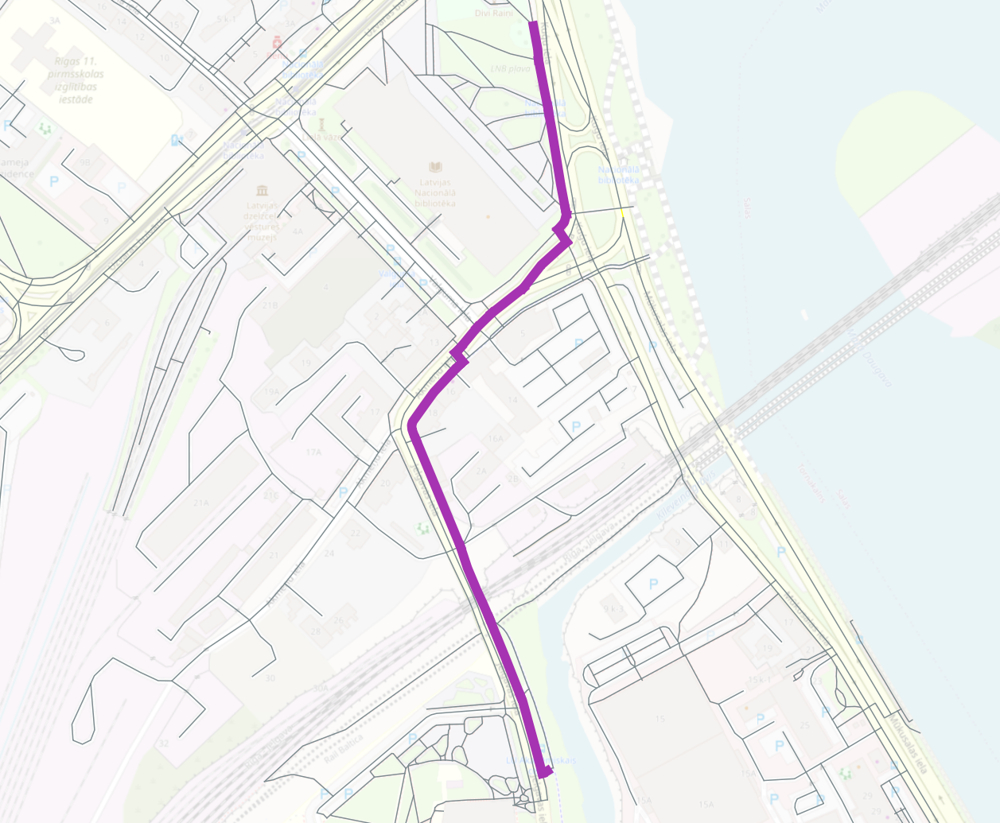

OSM Example¶
This page includes examples of usage of the Wayfarer library with routing data taken from OpenStreetMap.
Creating a Network from OSM Data¶
First we create a network using the OSMnx library.
import osmnx as ox
from wayfarer import loader
from osmnx import convert, projection
def download_osm():
"""
Download roads from OSM centered around Riga, Latvia
This only needs to be run once.
"""
location_point = (56.94105, 24.09682)
# get roads within a distance of 500m from this point
bbox = ox.utils_geo.bbox_from_point(location_point, dist=500)
G = ox.graph_from_bbox(bbox=bbox)
# save as a graph
ox.save_graphml(G, filepath="./data/riga.graphml")
# also save the data as a GeoPackage for review (not required for routing)
ox.save_graph_geopackage(G, filepath="./data/riga.gpkg")
def create_wayfarer_graph():
# load the OSMnx graph from the previously saved file
G = ox.load_graphml("./data/riga.graphml")
# get data frames from the graph
_, gdf_edges = convert.graph_to_gdfs(convert.to_undirected(G))
# project to Web Mercator from EPSG:4326 so we can work with planar distance calculations
gdf_edges = projection.project_gdf(gdf_edges, to_crs="EPSG:3857")
# get a dictionary of all edges in the network
d = gdf_edges.to_dict("records")
# loop through the edges and add a unique key
recs = []
for fid, props in enumerate(d):
# we can't use osmid as the key as sometimes it is not always unique and sometimes a list
# instead use the enumerator which will match the FID in the GeoPackage
props.update({"key": fid})
# we reprojected the geometry to Web Mercator, so we also need to update the length field
props["length"] = props["geometry"].length
recs.append(props)
# create the wayfarer network
net = loader.load_network_from_records(
recs,
key_field="key",
length_field="length",
from_field="from",
to_field="to",
)
# save the network
loader.save_network_to_file(net, "./data/riga.pickle")
if __name__ == "__main__":
download_osm()
create_wayfarer_graph()
print("Done!")
Calculate a Route Between Two Nodes¶
We can easily calculate routes between two nodes, by passing in the node IDs at the start and end of the route. We then export the route to a GeoJSON file in the EPSG:4326 projection.
Note
To run this example requires pyproj to be installed in your Python environment.
from wayfarer import loader, routing
from shapely.geometry import mapping
from shapely.ops import transform
import json
import pyproj
net = loader.load_network_from_file("./data/riga.pickle")
path = routing.solve_shortest_path(net, start_node=1390592196, end_node=1812435081)
features = []
transformer = pyproj.Transformer.from_crs(
"EPSG:3857", "EPSG:4326", always_xy=True
).transform
for edge in path:
# convert to EPSG:4326
geom = transform(transformer, edge.attributes["geometry"])
feature = {
"type": "Feature",
# convert the Shapely geometry to a GeoJSON geometry
"geometry": mapping(geom),
"properties": {"id": edge.key},
}
features.append(feature)
geojson_obj = {"type": "FeatureCollection", "features": features}
# save to a geojson file
with open("./data/riga.geojson", "w") as f:
json.dump(geojson_obj, f, indent=4)
print("Done!")
Calculate a Route Between Two User Entered Points¶
To route between two user entered points, you can simply snap to the closest node and use the approach above. To get an exact route from start point to the end point we need to split the network at the start and end of the route.
Note
To run this example requires Shapely to be installed in your Python environment.
First we will take two input points, and get their closest edge, and measure along the edge. The example below is just one way to get these values, the edge and measure could be calculated using OpenLayers in a web browser, or in a database using the geometries used to create the network.
from shapely.geometry import shape, Point
from wayfarer import loader, to_edge, linearref
def get_closest_edge(net, pt):
closest_line = None
min_dist = float("inf")
for edge in net.edges(data=True, keys=True):
edge = to_edge(edge)
geom = shape(edge.attributes["geometry"])
dist = pt.distance(geom)
if dist < min_dist:
min_dist = dist
closest_line = geom
fid = edge.key
# find snapped point on the line
snap_point, _ = linearref.get_nearest_vertex(pt, closest_line)
# get the measure along the line
distance_along = linearref.get_measure_on_line(closest_line, snap_point)
return (fid, distance_along)
net = loader.load_network_from_file("./data/riga.pickle")
start_pt = Point(2682555, 7748329)
end_pt = Point(2682585, 7747272)
print(get_closest_edge(net, start_pt))
# (281, 55.395036218377086)
print(get_closest_edge(net, end_pt))
# (1103, 7.734503415793048)
Now with an edge and measure for each point we will split the network, and route between the two user entered points to get an exact path. Wayfarer takes care of creating the split geometries, if the network contains geometry, although this can also be handled separately using a geospatial database to split and return features if required.
from wayfarer import loader, routing, splitter
from shapely.geometry import mapping
from shapely.ops import transform
import json
import pyproj
net = loader.load_network_from_file("./data/riga.pickle")
# now split the network with the user entered points
start_split_edges = splitter.split_network_edge(net, 281, [55.395])
start_node = start_split_edges[0].start_node
end_split_edges = splitter.split_network_edge(net, 1103, [7.735])
end_node = end_split_edges[1].start_node
path = routing.solve_shortest_path(net, start_node=start_node, end_node=end_node)
features = []
transformer = pyproj.Transformer.from_crs(
"EPSG:3857", "EPSG:4326", always_xy=True
).transform
for edge in path:
# convert to EPSG:4326
geom = transform(transformer, edge.attributes["geometry"])
feature = {
"type": "Feature",
"geometry": mapping(geom),
"properties": {"id": edge.key},
}
features.append(feature)
geojson_obj = {"type": "FeatureCollection", "features": features}
# save to a geojson file
with open("./data/riga2.geojson", "w") as f:
json.dump(geojson_obj, f, indent=4)
print("Done!")
The output GeoJSON file is visualised below.
